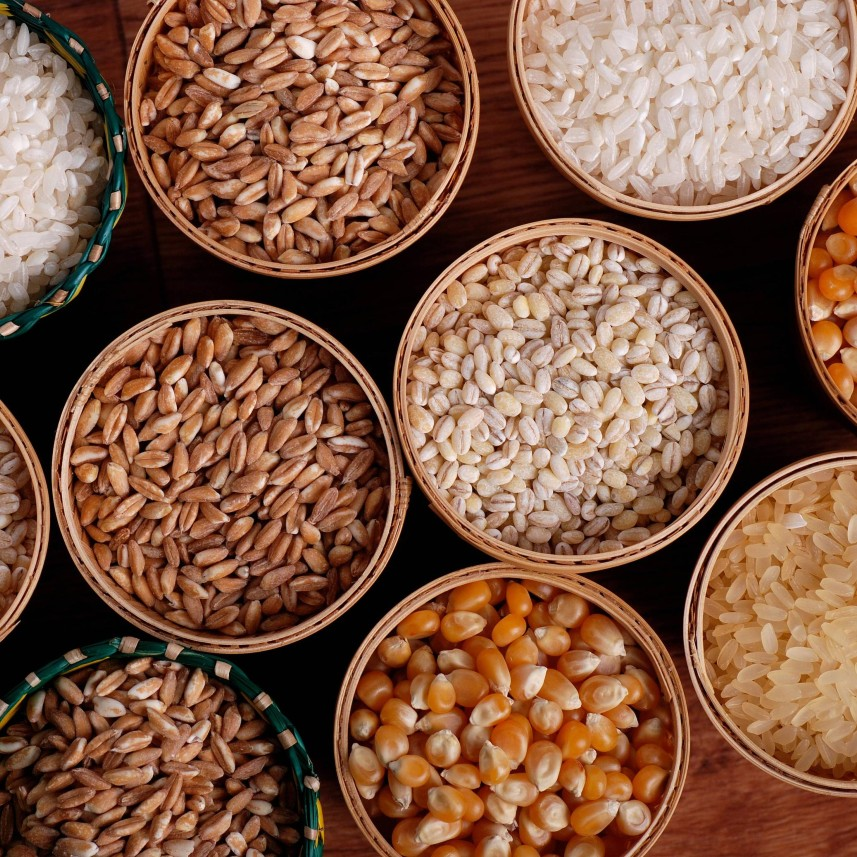
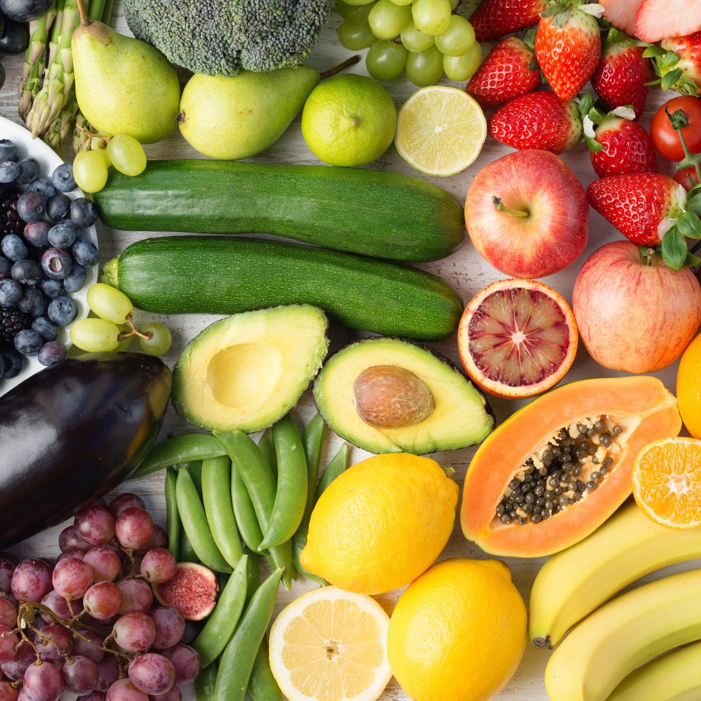
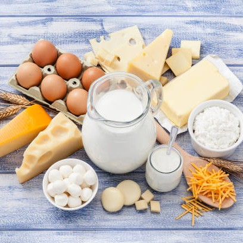

The Food Pyramid

Grains and cereals are a good source of fiber, carbohydrates, and protein.
They provide a wide range of vitamins and minerals into your diet; grains should be the main source of energy in your diet.
They are essential to stay healthy and for children’s growth.
The recommended serving size for ages 14-18 is 7 servings a day, for adults we recommend 7 servings.
Some examples of grains to incorporate into your daily diet are… bread, rice, pasta, or cereals.

Fruits and vegetables are packed with a variety of nutrients which have multiple health benefits including,
they contain lots of fibers, minerals, and vitamins which help protect us from major illnesses, they provide antioxidants,
and they help us maintain a healthy weight.
The recommended daily serving is at least 5 servings of vegetables and 2 servings of fruits.
Some examples of fruits and vegetables to incorporate into your daily diet are… tomatoes, potatoes,
oranges, corn, berries, or apricots.

Dairy products are an important source of calcium which helps give us strong bones and teeth.
Additionally, they also contain plenty of protein for growth and repair, carbohydrates and fats for energy,
and important vitamins and minerals for health benefits.
The recommended daily serving of dairy products is 2-3 servings (although elders would preferably need 3-4 servings).
Some examples of dairy products to incorporate into your daily diet are… milk, yogurt, or cheese.
The ‘protein group’ provides us with important nutrients such as protein, iron, zinc, fats, fibers, and vitamins.
Our body uses the proteins we digest from these foods to make lots of specialized chemicals that help make the body work.
Protein is essential for building, repairing, and maintaining the tissues in your body.
The recommended daily serving for the ‘protein group’ is 1 and a half servings for children up to the age of 8,
and 2 and a half servings for older children and adults.
Some examples of protein foods are meat, poultry, seafood, eggs, nuts, or seeds.
Confectionary, fats, and oils are at the very top of the pyramid (taking up the least space in your diet)
because they are not important or essential to obtain a healthy diet.
We recommend limiting your artificial sugar consumption as large amounts could cause long term health issues.
As well as sweets, unnecessary fats and oils should be avoided.
Some examples of this food group are… lollies, sweets, fats, or oils.